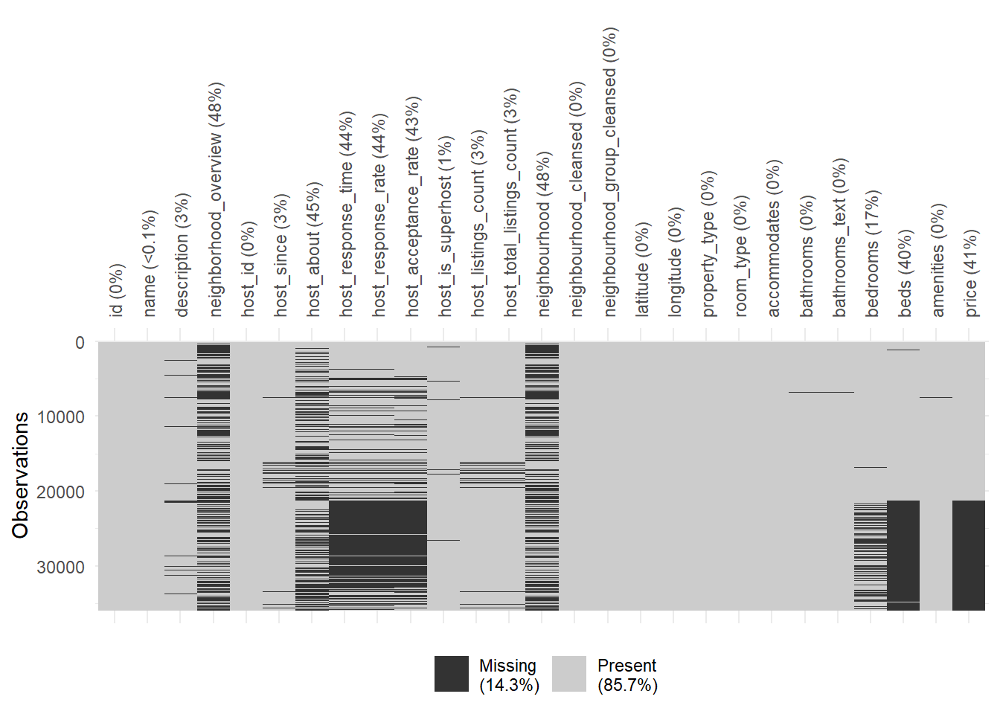
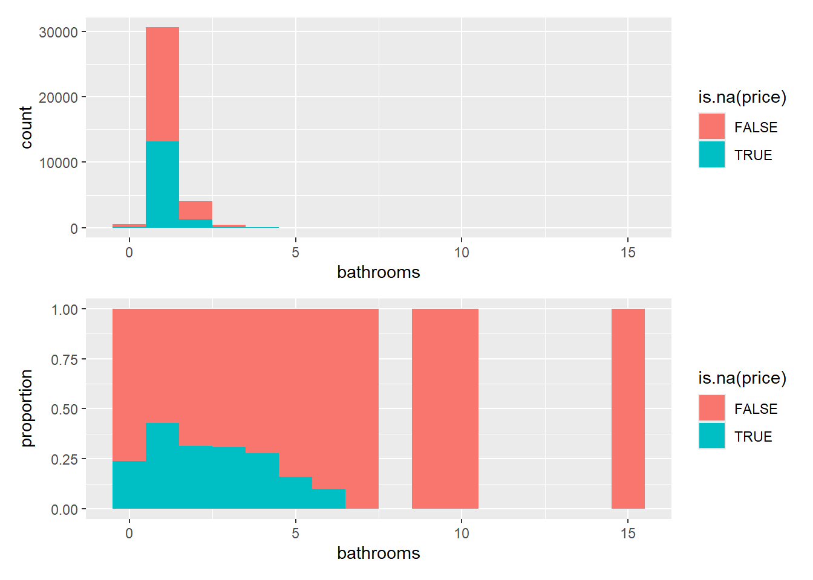
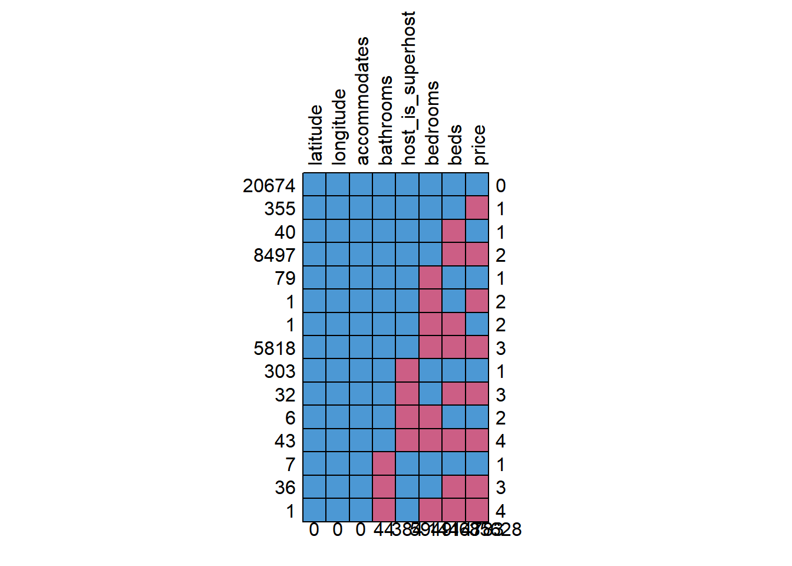
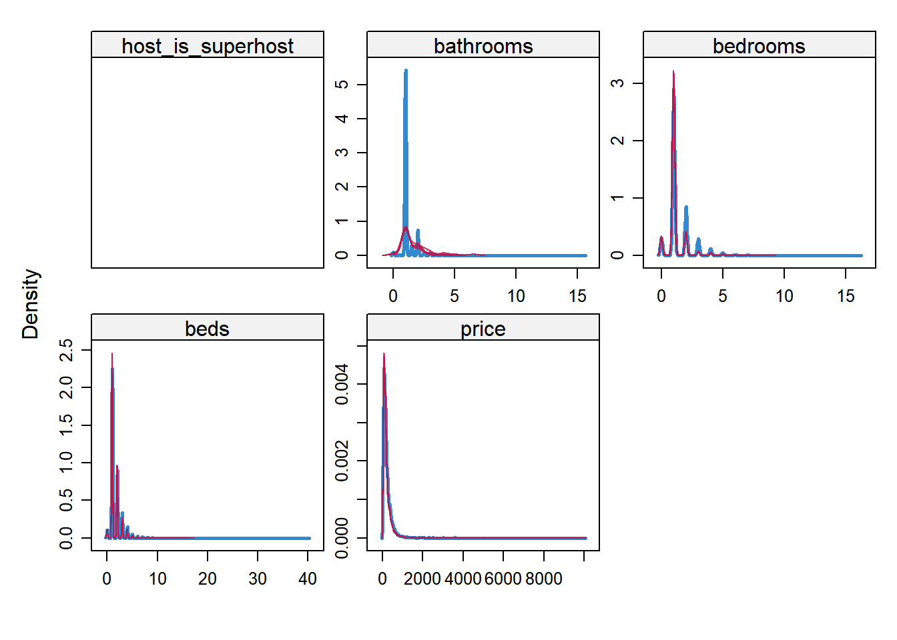

data_documentation <-
readr::read_csv(
"Inside Airbnb Data Dictionary - listings.csv detail v4.3.csv",
skip = 7, # removed the first 7 rows
col_names = T) %>%
slice(1:(79-4)) # removed the last 4 rowsdraft
1. Motivation
There are many considerations that must be made when finding temporary housing, either for vacations or business trips. Airbnb is a popular website that allows individuals or businesses to list potential places for users to choose. These users can choose where they wish to stay based on location, accommodations, how many beds they need, and price. We sought to create a model that predicts the price of an Airbnb listing based on various variables.
Airbnb data has been scraped by a team of contributors and gathered on a website here. Their motivation is to show transparency in how spaces are being rented to tourists in their communities.
When coming across this dataset, we found several missing values in the price of different Airbnb listings. Of the 36111 listings we found 14783 missing prices. We believe that we can use the latitude, longitude, beds, bathrooms, and neighborhood location among other variables to impute the missing pricing data for these listings.
2. Data Documentation
head(data_documentation)# A tibble: 6 × 5
Field Type Calculated Description Reference
<chr> <chr> <chr> <chr> <chr>
1 id integer <NA> "Airbnb's unique identifier for th… <NA>
2 listing_url text y <NA> <NA>
3 scrape_id bigint y "Inside Airbnb \"Scrape\" this was… <NA>
4 last_scraped datetime y "UTC. The date and time this listi… <NA>
5 source text <NA> "One of \"neighbourhood search\" o… <NA>
6 name text <NA> "Name of the listing" <NA> tail(data_documentation)# A tibble: 6 × 5
Field Type Calculated Description Reference
<chr> <chr> <chr> <chr> <chr>
1 instant_bookable bool… <NA> "[t=true; … <NA>
2 calculated_host_listings_count inte… y "The numbe… <NA>
3 calculated_host_listings_count_entire_… inte… y "The numbe… <NA>
4 calculated_host_listings_count_private… inte… y "The numbe… <NA>
5 calculated_host_listings_count_shared_… inte… y "The numbe… <NA>
6 reviews_per_month nume… y "The avera… <NA> From the given data documentation (codebook and website), it is missing four variables that are present in the listing dataset from Inside Airbnb.
These four variables are:
availability_eoynumber_of_reviews_lyestimtaed_occupancy_l365destimtaed_revenue_l365d
3. Team Information
Team name: Team Team
Members: Grey Gergen, Tyler Davis, Jesus Rodriguez, Jack Macfadyen
4. Plan of Action and Brief Look at Data (with some cleaning)
The data was downloaded from Inside Airbnb.
This data is for New York City, New York, United States. The original data set has 36111 observations of 79 variables. Columns that were not relevant for analysis or provided important information were removed from the data in order for a cleaner data set to work with for further analysis.
filter_df <-
df %>%
select(1,6,7,8,10,13,15,16,17,18,19,23,24,28,29,30:41)Some more small cleaning was done in order to visualize and find missing values. Some missing values were listing as N/A or left blank . This was fixed so that all missing values were listed as NA values.
## fixing missing values
filter_df[filter_df == "N/A"] <- NA
filter_df[filter_df == ""] <- NA
filter_df[filter_df == "[]"] <- NA
filter_df[filter_df == "-"] <- NAThe price variable, which is our variable of interest, is also formatted as character. This needed to be changed so that price should be numeric. Since, values were listed as $xxx.00 or $xx,xxx.00, all dollar signs and commas were removed in order for there to be no missing values added due to coercion before the format of price was changed.
## changing price from chr to numeric
filter_df <-
filter_df %>%
mutate(
price = str_remove_all(price, "\\$"),
price = str_remove_all(price, "\\,"),
price = as.numeric(price),
id = as.factor(id)
)We decided to consider all listings at or above the price of $10,000 per night an outlier. There were a considerable amount of listings above this number, going all the way to $50,000 per night. Many of the listings we examined manually had different, more realistic prices on the actual Airbnb website, indicating that either the listing was improper during the webscrape, or the webscrape itself had flaws. We chose $10,000 as the cutoff point as there were multiple listings at or below $9,999 per night that were verifiable. We removed all listings that were $10,000 per night or greater.
filter_df <-
filter_df %>%
filter(price <= 10000 | is.na(price))One more step in cleaning was cleaning the bathrooms column. There was some missing values, however the bathrooms_text column provided the number of bathrooms the listing had, so the number of bathrooms was extracted from the bathrooms_text if needed.
filter_df <-
filter_df %>%
## Cleaning the missing (non-missing) values in bathrooms from bathroom_text
mutate(
bathrooms =
case_when(
str_detect(bathrooms_text, "H|half") ~ 0.5,
is.na(bathrooms) ~ str_extract(bathrooms_text, "\\d+\\.?\\d*") %>% as.numeric(),
TRUE ~ bathrooms
)
)Info about data, skim()
skim(filter_df)| Name | filter_df |
| Number of rows | 35893 |
| Number of columns | 27 |
| _______________________ | |
| Column type frequency: | |
| character | 16 |
| factor | 1 |
| numeric | 10 |
| ________________________ | |
| Group variables | None |
Variable type: character
| skim_variable | n_missing | complete_rate | min | max | empty | n_unique | whitespace |
|---|---|---|---|---|---|---|---|
| name | 2 | 1.00 | 1 | 154 | 0 | 34241 | 0 |
| description | 953 | 0.97 | 1 | 1000 | 0 | 29803 | 0 |
| neighborhood_overview | 17405 | 0.52 | 1 | 1012 | 0 | 13980 | 0 |
| host_since | 1167 | 0.97 | 10 | 10 | 0 | 5176 | 0 |
| host_about | 16307 | 0.55 | 1 | 7094 | 0 | 11250 | 22 |
| host_response_time | 15772 | 0.56 | 12 | 18 | 0 | 4 | 0 |
| host_response_rate | 15772 | 0.56 | 2 | 4 | 0 | 70 | 0 |
| host_acceptance_rate | 15593 | 0.57 | 2 | 4 | 0 | 97 | 0 |
| host_is_superhost | 384 | 0.99 | 1 | 1 | 0 | 2 | 0 |
| neighbourhood | 17390 | 0.52 | 23 | 23 | 0 | 1 | 0 |
| neighbourhood_cleansed | 0 | 1.00 | 4 | 26 | 0 | 224 | 0 |
| neighbourhood_group_cleansed | 0 | 1.00 | 5 | 13 | 0 | 5 | 0 |
| property_type | 0 | 1.00 | 4 | 34 | 0 | 74 | 0 |
| room_type | 0 | 1.00 | 10 | 15 | 0 | 4 | 0 |
| bathrooms_text | 57 | 1.00 | 6 | 17 | 0 | 32 | 0 |
| amenities | 116 | 1.00 | 8 | 2162 | 0 | 29254 | 0 |
Variable type: factor
| skim_variable | n_missing | complete_rate | ordered | n_unique | top_counts |
|---|---|---|---|---|---|
| id | 0 | 1 | FALSE | 35893 | 259: 1, 684: 1, 687: 1, 699: 1 |
Variable type: numeric
| skim_variable | n_missing | complete_rate | mean | sd | p0 | p25 | p50 | p75 | p100 | hist |
|---|---|---|---|---|---|---|---|---|---|---|
| host_id | 0 | 1.00 | 173623777.40 | 193023319.13 | 1678.00 | 17775359.00 | 86144066.00 | 305738569.00 | 721443059.00 | ▇▂▁▂▁ |
| host_listings_count | 1167 | 0.97 | 101.44 | 569.91 | 1.00 | 1.00 | 2.00 | 8.00 | 5478.00 | ▇▁▁▁▁ |
| host_total_listings_count | 1167 | 0.97 | 168.20 | 811.00 | 1.00 | 1.00 | 3.00 | 11.75 | 9764.00 | ▇▁▁▁▁ |
| latitude | 0 | 1.00 | 40.73 | 0.06 | 40.50 | 40.69 | 40.73 | 40.76 | 40.91 | ▁▂▇▅▁ |
| longitude | 0 | 1.00 | -73.95 | 0.06 | -74.25 | -73.98 | -73.95 | -73.93 | -73.71 | ▁▁▇▂▁ |
| accommodates | 0 | 1.00 | 2.72 | 1.85 | 1.00 | 2.00 | 2.00 | 4.00 | 16.00 | ▇▁▁▁▁ |
| bathrooms | 44 | 1.00 | 1.17 | 0.50 | 0.00 | 1.00 | 1.00 | 1.00 | 15.50 | ▇▁▁▁▁ |
| bedrooms | 5949 | 0.83 | 1.39 | 0.95 | 0.00 | 1.00 | 1.00 | 2.00 | 16.00 | ▇▁▁▁▁ |
| beds | 14468 | 0.60 | 1.63 | 1.21 | 0.00 | 1.00 | 1.00 | 2.00 | 40.00 | ▇▁▁▁▁ |
| price | 14783 | 0.59 | 234.53 | 353.85 | 10.00 | 88.00 | 152.00 | 272.00 | 10000.00 | ▇▁▁▁▁ |
It is important to note that some columns, such as host_response_rate is listed as a character variable because their values are formatted as “50%”, “32%”, “xx%”…
Further analysis should make sure the columns selected are formatted correctly.
The next step in the analysis will be to analyze the missing pattern in our data especially for the price variable.
vis_miss visualization
filter_df %>%
arrange(price) %>%
vis_miss(., warn_large_data = F)
The vis_miss() plot shows that occurence of missing values in our data.
mcar_test
Here are a few missing completely at random test. We believe that we can use the beds, bathrooms, and neighborhood location among other variables to impute the missing pricing data for these listings.
These tests show that there are some missing patterns in our data.
filter_df %>%
select(price, latitude, longitude) %>%
mcar_test(.)# A tibble: 1 × 4
statistic df p.value missing.patterns
<dbl> <dbl> <dbl> <int>
1 240. 2 0 2filter_df %>%
select(price, beds) %>%
mcar_test(.)# A tibble: 1 × 4
statistic df p.value missing.patterns
<dbl> <dbl> <dbl> <int>
1 24.5 2 0.00000467 4The price variable was tested against beds along with latitude and longitude with little’s MCAR test. The results show that the data is not missing completely at random which is shown by the significance in the previous tests. These tests results tell us that the price variable’s missingness is dependent upon other variables within the data.
filter_df$host_response_rate <- as.numeric(sub("%", "", filter_df$host_response_rate)) / 100
filter_df$host_acceptance_rate <- as.numeric(sub("%", "", filter_df$host_acceptance_rate)) / 100
filter_df$bathrooms <- ifelse(is.na(filter_df$bathrooms), as.numeric(sub(" .*", "", filter_df$bathrooms_text)), filter_df$bathrooms)Warning in ifelse(is.na(filter_df$bathrooms), as.numeric(sub(" .*", "", : NAs
introduced by coercionggplot(filter_df, aes(x = neighbourhood_group_cleansed, y = price)) +
geom_point()Warning: Removed 14783 rows containing missing values or values outside the scale range
(`geom_point()`).
The next step in the analysis will be to build a model with price as the response variable. The predictors will be values that are suspected to be indicators of price such as beds, lat and long, accommodates, bathrooms, etc. This model will then be run and coefficients values and significance will be documented. This will all be done without imputation.
The price data will then be imputed by the predictors used in the model in the current form they are in. The mice package will be used to complete the imputation and it will be done multiple times. The multiple imputations will then be pooled and a model for price will then be created and ran. The predictors will be the same. We will then document the coefficients and significance values from the model summary.
The price data will then be imputed by the predictors with a transformation done to the latitude and longitude. The transformation will change the latitude and longitude from degrees to Universal Transverse Mercator (UTM). This transformations will hopefully give our regression model a better sense of overall distance between units in NYC. The UTM is a flat coordinate system that is measured in meters and allows the regression model to better pick up distances. This imputation will be run and then the same model will be run to predict price. The coefficients and significance of the model will then be documented.
The next step is the comparison between the three models run and their coefficients. We can then compare the coefficients by looking at the pooled estimates and the standard errors across all three models. We can do this with an understanding of Rubin’s Rules and how they apply to pooled models. These results will allow us to gain insight into the models and how the two imputed models differ and if they differ from the unimputed model.
This alone may not allow us to make a strong conclusion on which imputation predictors are better for our price variable. This will then lead us to do a comparison test by testing the correlation between the imputed and true values of our price variable between our two methods. This can be done by masking values that we already have in our price variable, then imputing these values using both methods. We will then calculate the correlation between the true and imputed values testing which predictor set is better, degrees or UTM. This will show any major differences between the two methods and give us a sense for price which method is better. This alone will not tell us if using UTM vs degrees is better in all cases but it could open the door for further discussion and digging into the topic.
Modeling
The next step in the analysis will be to build a model with price as the response variable. The predictors will be values that are suspected to be indicators of price such as beds, lat and long, accommodates, bathrooms, etc. This model will then be run and coefficients values and significance will be documented. This will all be done without imputation.
Matrix Plot
library(psych)Warning: package 'psych' was built under R version 4.5.2
Attaching package: 'psych'The following objects are masked from 'package:ggplot2':
%+%, alphafilter_df %>%
select(
price,
bedrooms, beds,
latitude, longitude,
accommodates, bathrooms,
host_is_superhost
) %>%
pairs.panels(.,
method = "pearson", # this is the correlation method
hist.col = "#00AFBB",
density = TRUE, # this shows density plots
ellipses = TRUE, # show correlation ellipses
lm = TRUE
)
The matrix plot shows that price isn’t really correlated substantially with any other variable.
Perhaps a log transformation would help better model the effect of the variables of interest with price.
Is it also worthy to note that bedrooms, bathrooms, and beds seem to be correlated, so maybe in further analysis, multicollinearity should be checked.
Model before Imputation
model <-
filter_df %>%
lm(log(price) ~ bedrooms + beds + latitude*longitude + accommodates + bathrooms + host_is_superhost-1, data = .) ; summary(model)
Call:
lm(formula = log(price) ~ bedrooms + beds + latitude * longitude +
accommodates + bathrooms + host_is_superhost - 1, data = .)
Residuals:
Min 1Q Median 3Q Max
-2.9470 -0.4417 -0.0363 0.4013 4.8598
Coefficients:
Estimate Std. Error t value Pr(>|t|)
bedrooms -8.163e-02 5.771e-03 -14.146 < 2e-16 ***
beds 4.217e-02 5.532e-03 7.622 2.60e-14 ***
latitude -3.208e+03 7.871e+01 -40.754 < 2e-16 ***
longitude 1.762e+03 4.332e+01 40.676 < 2e-16 ***
accommodates 1.994e-01 3.183e-03 62.667 < 2e-16 ***
bathrooms 5.729e-02 9.121e-03 6.280 3.44e-10 ***
host_is_superhostf 1.302e+05 3.203e+03 40.661 < 2e-16 ***
host_is_superhostt 1.302e+05 3.203e+03 40.661 < 2e-16 ***
latitude:longitude -4.340e+01 1.065e+00 -40.770 < 2e-16 ***
---
Signif. codes: 0 '***' 0.001 '**' 0.01 '*' 0.05 '.' 0.1 ' ' 1
Residual standard error: 0.625 on 20665 degrees of freedom
(15219 observations deleted due to missingness)
Multiple R-squared: 0.9852, Adjusted R-squared: 0.9852
F-statistic: 1.531e+05 on 9 and 20665 DF, p-value: < 2.2e-16Frequency Table and Plot
filter_df %>%
select(host_is_superhost, latitude, longitude, accommodates, bathrooms, bedrooms, beds, price) %>%
md.pattern(., plot = T, rotate.names = T)
latitude longitude accommodates bathrooms host_is_superhost bedrooms
20674 1 1 1 1 1 1
355 1 1 1 1 1 1
40 1 1 1 1 1 1
8497 1 1 1 1 1 1
79 1 1 1 1 1 0
1 1 1 1 1 1 0
1 1 1 1 1 1 0
5818 1 1 1 1 1 0
303 1 1 1 1 0 1
32 1 1 1 1 0 1
6 1 1 1 1 0 0
43 1 1 1 1 0 0
7 1 1 1 0 1 1
36 1 1 1 0 1 1
1 1 1 1 0 1 0
0 0 0 44 384 5949
beds price
20674 1 1 0
355 1 0 1
40 0 1 1
8497 0 0 2
79 1 1 1
1 1 0 2
1 0 1 2
5818 0 0 3
303 1 1 1
32 0 0 3
6 1 1 2
43 0 0 4
7 1 1 1
36 0 0 3
1 0 0 4
14468 14783 35628We know there are 14783 missing values in price.
There are 355 occurences when price is the only missing value.
It looks like price is missing the most when beds is also missing.
The second most time price is missing is when beds AND bedrooms are missing.
Note that, latitude, longitude, and accomodates are the only variables of interest that do not have any missing values.
Imputing Missing Values Using mice
Imputing missing values for the variables of interest using predictive multiple matching.
# Run multiple imputation
airbnb_imputation <-
filter_df %>%
select(host_is_superhost, latitude, longitude, accommodates, bathrooms, bedrooms, beds, price) %>% mice(data = ., m = 5, method = "pmm", seed = 20251125)summary(airbnb_imputation)Class: mids
Number of multiple imputations: 5
Imputation methods:
host_is_superhost latitude longitude accommodates
"" "" "" ""
bathrooms bedrooms beds price
"pmm" "pmm" "pmm" "pmm"
PredictorMatrix:
host_is_superhost latitude longitude accommodates bathrooms
host_is_superhost 0 0 0 0 0
latitude 0 0 1 1 1
longitude 0 1 0 1 1
accommodates 0 1 1 0 1
bathrooms 0 1 1 1 0
bedrooms 0 1 1 1 1
bedrooms beds price
host_is_superhost 0 0 0
latitude 1 1 1
longitude 1 1 1
accommodates 1 1 1
bathrooms 1 1 1
bedrooms 0 1 1
Number of logged events: 1
it im dep meth out
1 0 0 constant host_is_superhostmice diagnostics
Density Plot
densityplot(airbnb_imputation)
In these density plots, the blue are the actual observed values and the magenta are the imputed values. These plots show us how close the imputed values are distributed compared to the observed values for the variables: host_is_superhost, bathrooms, bedrooms, beds, and price.
In a perfect world, the imputed values should follow closely the distribution of the observed values. Here, bathrooms seems to be the biggest outlier.
Restructure the model with the imputed values
completed_list <- complete(airbnb_imputation, "all") %>% map(as_tibble)models <-
map(completed_list, ~
lm(log(price) ~
bedrooms + bathrooms + beds +
accommodates +
latitude*longitude +
host_is_superhost-1,
data = .x)
)# Pool results
pooled <- pool(models)
summary(pooled) term estimate std.error statistic df
1 bedrooms -7.349961e-02 5.732398e-03 -12.8217902 58.02233
2 bathrooms 1.408300e-01 1.026424e-02 13.7204477 24.23452
3 beds 3.105273e-03 5.160303e-03 0.6017617 99.19533
4 accommodates 2.038898e-01 3.525958e-03 57.8253660 22.05384
5 latitude -2.638957e+03 7.663489e+01 -34.4354457 189.13398
6 longitude 1.449470e+03 4.219786e+01 34.3493686 187.91570
7 host_is_superhostf 1.071166e+05 3.119519e+03 34.3375329 188.57904
8 host_is_superhostt 1.071166e+05 3.119519e+03 34.3375314 188.57908
9 latitude:longitude -3.571097e+01 1.036643e+00 -34.4486743 188.46967
p.value
1 1.415984e-18
2 6.369983e-13
3 5.487057e-01
4 1.406422e-25
5 2.109273e-83
6 6.295110e-83
7 4.583774e-83
8 4.583701e-83
9 2.881205e-83# Pooled coefficients
pooled_coefficients <- summary(pooled)[, c('term', 'estimate')]Comparing model before and after imputation
Before Imp.
summary(model)$coef Estimate Std. Error t value Pr(>|t|)
bedrooms -8.163383e-02 5.770766e-03 -14.146100 3.209921e-45
beds 4.216613e-02 5.532001e-03 7.622220 2.600856e-14
latitude -3.207635e+03 7.870815e+01 -40.753533 0.000000e+00
longitude 1.762273e+03 4.332411e+01 40.676489 0.000000e+00
accommodates 1.994383e-01 3.182501e-03 62.667145 0.000000e+00
bathrooms 5.728619e-02 9.121341e-03 6.280457 3.443104e-10
host_is_superhostf 1.302440e+05 3.203155e+03 40.661159 0.000000e+00
host_is_superhostt 1.302440e+05 3.203155e+03 40.661148 0.000000e+00
latitude:longitude -4.340249e+01 1.064563e+00 -40.770239 0.000000e+00After Imp.
summary(pooled) term estimate std.error statistic df
1 bedrooms -7.349961e-02 5.732398e-03 -12.8217902 58.02233
2 bathrooms 1.408300e-01 1.026424e-02 13.7204477 24.23452
3 beds 3.105273e-03 5.160303e-03 0.6017617 99.19533
4 accommodates 2.038898e-01 3.525958e-03 57.8253660 22.05384
5 latitude -2.638957e+03 7.663489e+01 -34.4354457 189.13398
6 longitude 1.449470e+03 4.219786e+01 34.3493686 187.91570
7 host_is_superhostf 1.071166e+05 3.119519e+03 34.3375329 188.57904
8 host_is_superhostt 1.071166e+05 3.119519e+03 34.3375314 188.57908
9 latitude:longitude -3.571097e+01 1.036643e+00 -34.4486743 188.46967
p.value
1 1.415984e-18
2 6.369983e-13
3 5.487057e-01
4 1.406422e-25
5 2.109273e-83
6 6.295110e-83
7 4.583774e-83
8 4.583701e-83
9 2.881205e-83Interpretation
It looks like after imputation, there are a few changes to our results.
- The
bedspredictor variable becomes smaller and is found to be no longer significant in the model, while thebathroomspredictor variable increases and stays significant - Effects of other varibales change slightly, but not enough for any significant difference
This suggests that msising data in variables bathrooms and beds may have been introducing bias or instability in the original model.
Despite these differences, location indicators latitude and longitude and whether the host is a classified as a superhost (host_is_superhost) effect the model greatly and stay very significant, indicating that imputation only helped improve these relationships by improving reliability for other variables with missing values.